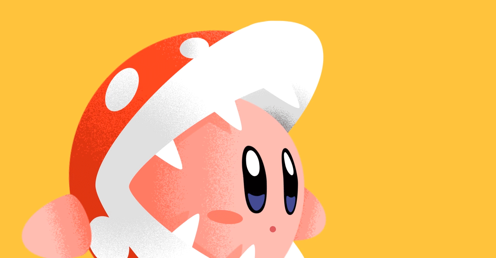
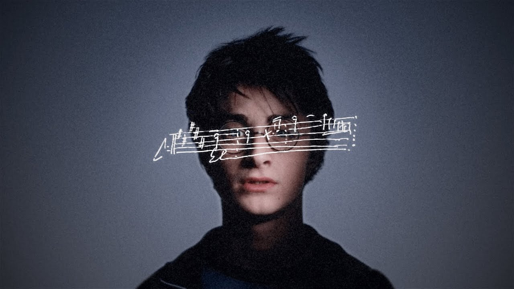
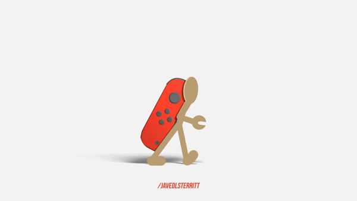
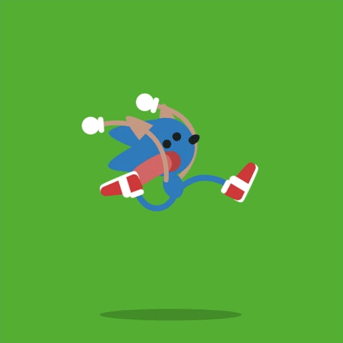
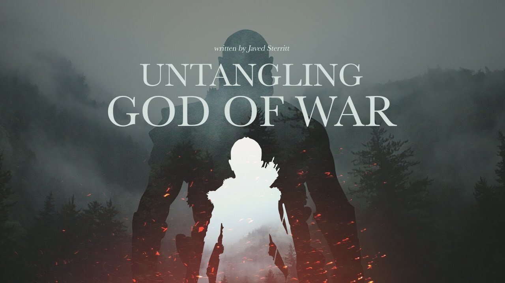

Hi, I'm Javed Sterritt, I'm a filmmaker, content creator – I've been working as a director, editor and motion designer for the last 10-15 years.
I [also] run a YouTube channel called Good Blood, where I create video essays talking about storytelling, and pop culture, and a little bit of the hidden decisions creatives make in their creative works.
That’s a really good question, how do I balance both the professional stuff and the YouTube, kind of experimental stuff – it is always a tricky balance, but what I try to do is bring everything that I learned – I think it works really well together, everything that I learn professionally I can then bring to YouTube… actually just give me a second, (checking), I think it was peaking a little bit...
(mic adjustements)
...yeah so I think it works really well together, everything that I learned professionally, I can bring to what I'm creating on YouTube. It's quite important, and I don't want to stop learning from being actually out there and on the job.
I still think there is quite a lot to learn about storytelling, in communications and in creative works – I think if I was just doing YouTube, I think my learnings would be quite slow, as I try and teach myself how to, you know, how to do things. But being out there and working under other storytellers, and being under pressure, I think you learn a lot from being out on the field.
There's definitely – you know, everyone talks about the algorithm, right? Like the algorithm, YouTube’s algorithm, is this big monster that kind of hangs over the creativity of YouTube – and you have to give it the right foods to appease it. That's kind of the idea with YouTube, and I've been quite fortunate in that I have had a job outside of [it], and so I haven't relied too much on trying to make a living just from [that].
And so what that has meant is that I've been using YouTube just to experiment. That's why I have a lot of different styles you know, I have a short Mario + Rabbids video that's 7 minutes long or something – and then I've got like a half an hour God of War video or a half-hour Ocarina of Time video, and it's just experimenting, and figuring out what I really enjoy doing. So I have had that luxury.
I think if I was ever to go and do YouTube full-time, and try and make it a living, I would probably have to change the way that I do some things. What I found is that my channel has been growing, and it's interesting to see because you can see some channels who pump out videos pretty regularly – my videos have been two years apart (laughs) and there's still a little bit of growth there.
But I think what I really tried to do is: I think with pumping out videos fast, that comes with it a sense of rush, whereas I like to really look at the texts, really look at the story, that I'm trying to tell, and really workshop the message to try and create something that resonates with people.
And whatever you're finding is that, these really thoughtful, emotional works, [they] seem to be a [good] way to grow a channel you know, it's not just there's one way where you're pumping videos really quickly. So that's been of interesting to see people responding emotionally to the stuff that I'm creating. There's more than one way to go about it.
I think it’s OK that there's more than one way to talk about things. It comes down to a personal experience I think; there's definitely a place for the more technical analyses (is that the word analysis-es? (laughs)) you know what I mean, but there's definitely a place for it, and sometimes I enjoy watching those videos – just really simple, or really fast, someone's 10-minute review of a game, where they tackle a lot of different subjects: the mechanics, the story, the graphics, etc. Kind of a classic video game review.
But then there is, you know – I think there's never been a time like now for video game storytelling, where I think we're really pushing the envelope with the kind of stories that we can tell. Rewind 20 years ago, and the stories weren't as fleshed out, or as character-driven, whereas now technology allows for bigger cinematics.
And so I think it's become a lot easier to explore and analyze bigger storytelling [ideas], because there are just more and better stories being told. So I’m not sure if that answers your question – I don't think it necessarily has to be a marriage between the two, where it has to be just one type of review. I think, having 30-40 different types of reviews, and ways to talk about games, they're all completely valid.
I think personally I'm drawn to the character stuff: I'm really drawn to the storytelling, and you know, deep down inside, I think my goal, as to what I'm doing on, my goal for my channel on YouTube is to try and prove to the non-gamers that video games can be art, that they can be powerful storytelling tools – and I think that is the drive behind a lot of what I do is just proving that.
The "videogames are art" discussion is one that has been going on for a long time, and what's so tricky about the conversation is that video games – again, their inception was to be “fun”, to provide some fun. And after some time, different developers and storytellers have taken videogames and started to twist them and turn them into their own thing.
Man, there's just so much stuff to talk about like – if you think about, when you use the word "art", right, I think what comes into a lot of people's minds is standing in an art gallery looking at a painting. But I think once we understand that all art forms, including paintings, they're all interactive, there's not one type of art where the audience is passive.
Painting requires us to take a step in and consider what's going on, without the audience’s [reaction to] the art piece (…) artists wouldn't be famous, you know?
If we look at say, something like Among Us, it's about finding out who's the mole, who's the killer – and as much as that's fun, you can find aspects of the human condition in that, where it's collaboration, betrayal, all these things.
(…) To answer your question, I don't think we're very far away from everyone thinking about video games as being art. Full stop.
It's the classic case of you know, a new piece of technology comes in, and the older generation doesn't understand it, and so they reject it. It's a pretty common story, and the same thing is probably the same for video games – you know like, [in] my generation, everyone I know has a gaming console, and even games on their phone, whereas my parents don't play any video games. My grandparents definitely didn’t.
So yeah, I think there is definitely a generational thing going on, but I've got my children, and my kids are growing up in a household with video games. I play video games a lot with my kids, and it's just a normal part of life: we sit down and we play it and we enjoy it together, we experience these stories together, and we talk about it, so it's such a normal thing now, and so that's why I think with the next generation after my kids, it'll be even more normalized.
I think both of these questions can be summed up by saying that I've matured as a communicator over time. If you look at my older Good Blood videos, you see that they're a bit more timid, a bit more flashy (…) but one of the big things, one of my greatest learnings, running the channel, and coming from a motion graphics background, was that [in] my earlier works, I [relied on] really flashy graphics to get me through, whereas my messaging, what I was actually saying underneath, wasn't that strong.
It wasn't that thoughtful, and I gave it the least attention, and what I ended up finding was that people can kind of sniff sniff that out from a mile away (laughs).
When we watch content, TV shows, or cinema, whatever, the audience has their feelings out, ready to be attached to something. Whether it's a character, or message, there's always this longing to attach ourselves [to something], and I think [that] what my older work suffered from was that it didn't have a through-line, it didn't have a message that was really solid and thought through. So they failed.
Essentially, that is what happened. The videos that I removed were the ones that I felt like didn't have a good through-line, they relied too much on the flashy graphics; especially that Sonic one that you brought up, that's Exhibit A. That had a really thin message that wasn't very well-thought-out.
I tried to blind everybody with animation, and the flashy graphics, and the graphs – but what was underneath was not sound reasoning (laughs). I like to think I've grown as a storyteller, I've grown as a communicator and now I'm – the stuff I'm creating now, I put 90% of my effort into the message, into the story, and what I'm trying to actually say.
And then I figure out, “ok, what are the graphics on top [going to be], what are the visuals doing”. I swapped it around, and I think it's making my work now, I think, just a lot stronger.
It’s such a tricky time – basically what's happened is that the line between developer and consumer has thinned out so much. I remember back in the early nineties, when I had a Sega Mega Drive or Genesis, you had to call the special hotline to get secrets. I'm not sure if you remember, but that was the closest we really got to contacting developers, or contacting an insider, you know.
Some of my videos have been acknowledged by the creators themselves; my Crash Bandicoot video was acknowledged by Jason and Andy from Naughty Dog, and also the “Untangling God of War" was retweeted by Cory Balrog. Yeah, that was amazing; but as a kid, you never think it would happen, – the idea of a developer, the creator of a video game, would be in contact with you, or recognize you, is just insane.
But now, it's just a common part of the discourse – you find them on Twitter, and it's so easy to reach developers now and it's so easy to create petitions, and it's so easy to create mobs and retweets on, you know – trying to get the developers attention.
And so it's like, when we get a new game from a developer – is that really the full creative team's vision? I think a lot of the time studios are [aware] of their fanbases now, that's why you can find fanservice just everywhere. You know, I loved the Last of Us 2, it was such a risk, but for me that was such a big, it held a better high – it was like, "we're telling our own story".
It wasn't really impacted by the fanbase, because if they were really considering the fanbase the whole time, they wouldn't have killed off the same characters, they wouldn't have made these big choices, they wouldn't have made you play as other characters you know, [all] these risky decisions.
I personally loved it, it was difficult to play on; we could go into that whole thing with TLOU2 (...) it's difficult to play because you become attached to these characters, but I love that they took such a mess of risk on a triple A title like that. I’m a little bit scared about the future of where it's going.
I think everyone was up in arms about TLOU2, because it wasn't the story that they wanted, and that's the big thing, it was like, [people said], “this is not the story that we wanted!”. And in the back of my mind, I'm like, "well, you guys go to learn how to code, and go make your own game, with your own story!”
Yeah, it's tricky, and I'm sorry if I'm being a bit scattered – there are a lot of thoughts that come in, but yeah. It's becoming a tricky environment to navigate for developers, and storytellers, for sure.
First of all, it's crazy to think that I have a fan base. I don't think I think about Good Blood or even myself like that – I don't see myself as someone who's famous. I think, what I really am trying to do is make really good work – basically increase my profile so I can do bigger and better things, but what I think it's at the core of my work it's shining a light on other people's creative works, you know (laughs).
And so, when it comes to interacting maybe with the Good Blood fan base, I [do] think there is a fan base there, but I'm pretty, pretty proactive like – I'm at the Discord, and chatting a lot to the people in the Good Blood Discord; I don't really see myself as above them in any way; and there was the case of somebody very first video that we bought up talked about before, was the Sonic video.
Basically, what happened was I presented a new design, I did a redesign for Sonic, it's not very good – but it was something that I injected into the scene, just to see what happens, hoping that it would go well. You know, I don't think anyone really creates something hoping that it would go bad, but the Sonic Community really struggled to get on board.
And I got a lot of hate from it; with a little really positive criticism, really valid comments like “hey, this design wouldn't work, because you know, XYZ” – but I had other people saying like “hey you're a faggot, you're a hipster", you know, whatever.
That was really interesting, as my first piece of work that I put out into the scene, like – that was everyone's first impression of who I was, and that was really difficult. That took me a long time to process. I'm glad that was the first one, because I was still really small and it taught me really quickly that I need to do more research, and that I can't really be putting my ego into my work.
So I'm not sure if that answers your question but I feel like I've had some of a spectrum – although definitely not the hate that other creators get. My work especially is, really – my brand is not "Javed", my brand is "professional, cinematic on 10, about other people's work", and so I think I went under the radar a little bit, there's no controversy around "Javed" really because I'm not really putting my own personal life out there like other people do.
So yeah (...) I think my interactions online have been fairly tame only because I don't present a lot of drama, like other YouTubers may do.
Yeah, my life has actually changed quite a lot. I just shot a new update video [at the time of this interview], it took me some time to put it up on YouTube, because the job that I was working at finished up a couple of weeks ago, and so the terrain of my life has had a bit of an earthquake, so to speak – so I've been forced to reassess parts of my life, and figure out what takes priority, and what do I actually want to do, now that that job is finished up.
I really do want to push more into Good Blood, that's where my heart lies – yeah, that's what's up. Before I said that I don't really present myself in my work, but I think [that], at the same time, if you were to watch all of the content on Good Blood you’d really be getting a glimpse into my soul, you know. Like, it's very much me; not in a physical sense, but in the way in which I think about things, and process things, and then create things.
So I would love to push more into [that], and I would love to actually keep going with the essays, because I really enjoy the research process, but also spend time with my own stories, experimenting with different types of storytelling.
I have a few little projects that I kind of have [stashed] away in the background, along with a bunch of other essays as well. That's kind of the next step. Also getting, doing some freelance stuff on the side, like – I do believe there's still more to learn from other storytellers out there. I'd hate to cut off my chance to learn stuff now, because, like I said before, [you learn things] a lot quicker when you're out in the world and actually making stuff. So yeah, that's kind of the plan.
I just think that as long as developers and storytellers are staying true to themselves, while making works that they really believe in, it will be fine. There's always going to be someone who doesn't like an IP [Intellectual Property ie. game franchise] for some reason, but I think what's dangerous is if we start creating content just for fanbases (…) telling stories we know that everyone just wants to hear.
I think that's when we are in trouble. I think we need to keep pushing the envelope, just like TLOU2 did, just like God of War is doing. As long as we stay true to the stories we want to be telling, and we're staying true to their expression, it will be fine. I personally am really excited for what comes next – I feel like we are just scratching the surface now with what we can do with video games. So yeah, I'm excited.